VEER
VeeR VR: Designing for Immersive Storytelling
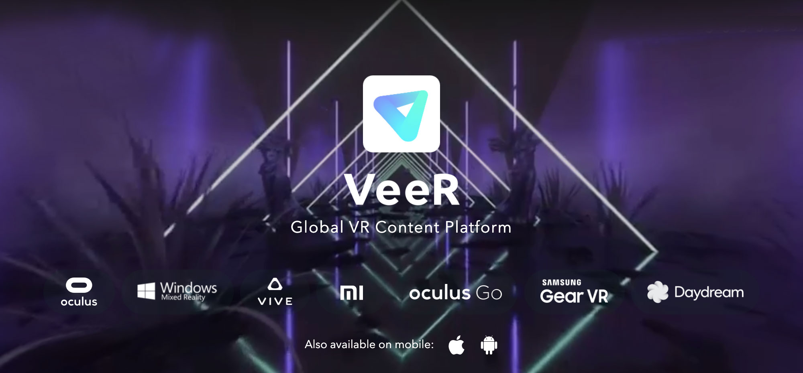The Challenge: Navigating the Unknown
It was 2018, and VR was still a frontier. The hype was real, but the adoption? Not so much. VeeR VR had started as a community-driven platform, where anyone could upload VR content. It was a bold move—giving creators a space to share—but there was one major problem: user-generated content was inconsistent in quality, and VR headset adoption was slow. Viewers struggled to find engaging content, and as a result, engagement suffered. VeeR needed a shift. It wasn’t just about showcasing VR content; it was about creating a premium cinematic experience that kept users coming back. That’s where I came in. As a UX designer, my mission was to redefine how users discovered and consumed VR content in an emerging medium. The challenge? Make something new feel intuitive.
As the UX designer, I owned, designed and delivered the experience for:
As the UX designer for the VR platform, I'm proud that since VeeR VR 2.0's launch in 2018, we have achieved high consumer satisfaction rates, strong user retention, and best-in-class overall user experience.
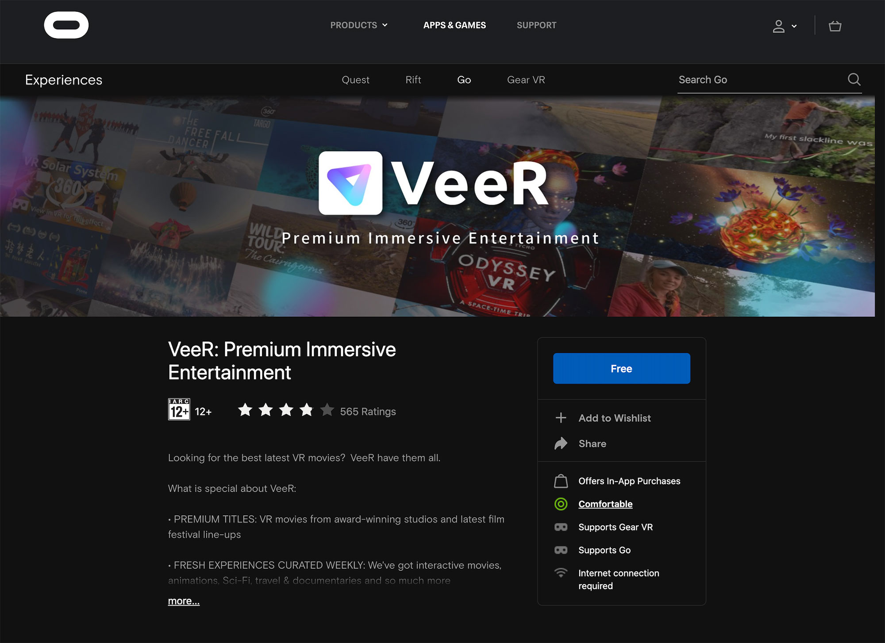Overview: From Community to Platform
VeeR VR launched in 2017 as a VR community platform where creators could upload VR content for headset users to watch. However, due to limited VR headset adoption and lower UGC content quality in 2017-2018, we pivoted our focus to premium content when I joined in 2018. We began curating high-quality cinematic VR content and introduced a premium paid section on our platform.
Feeds - Case Study
My first project was redesigning the Feeds section. User research indicated that users found the old Feeds cluttered and difficult to navigate. To reduce cognitive load, we evolved the Feeds design system. In the new version, content is organized by categories, and our machine learning-based recommendation system helps users discover content that matches their interests. This makes content exploration more intuitive in an immersive environment.
As the result of this redesign, the average number of content watched per session has inceased by 69.8% and the average length of watch time per session has increased by 34.4% comparing with old version.
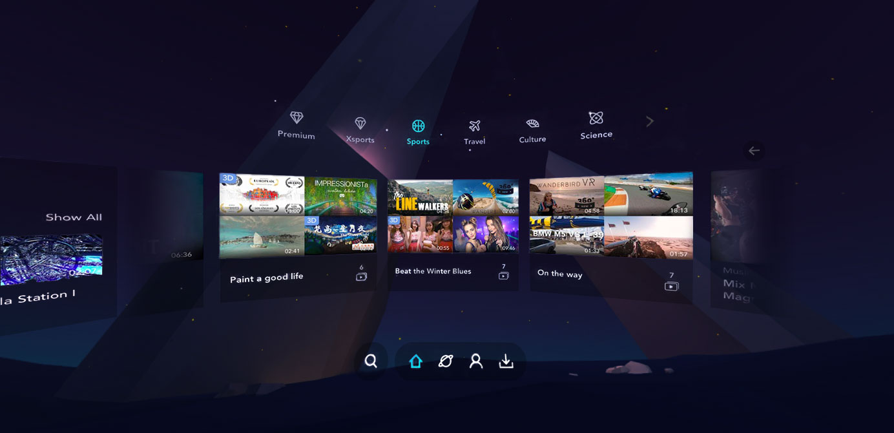Goal
Increase App Engagement & User Retention.
Design Solution
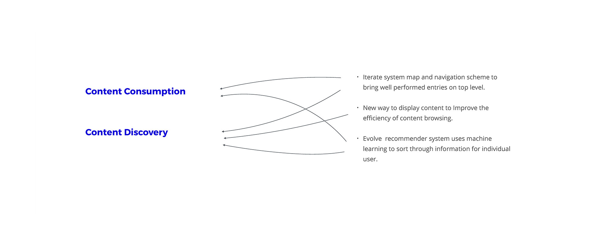Measure
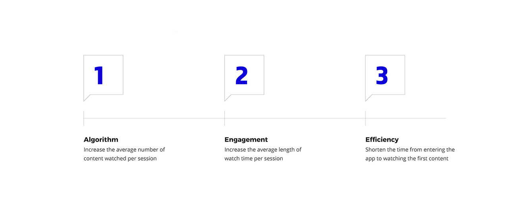Data Analysis
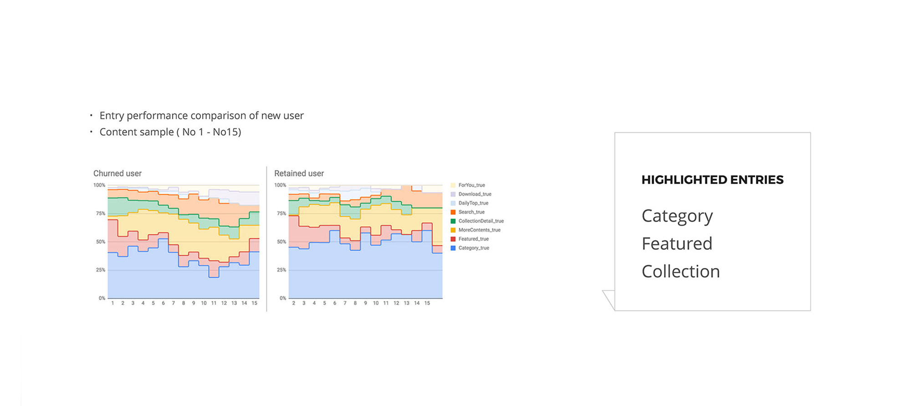New Structure
Rearranged navigation level to put well-performed entry at first place. The new information architecture:
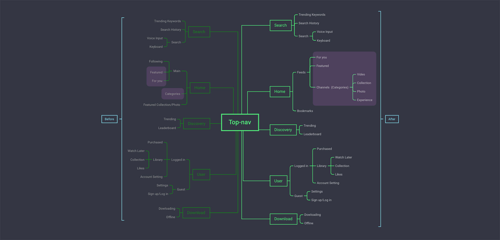 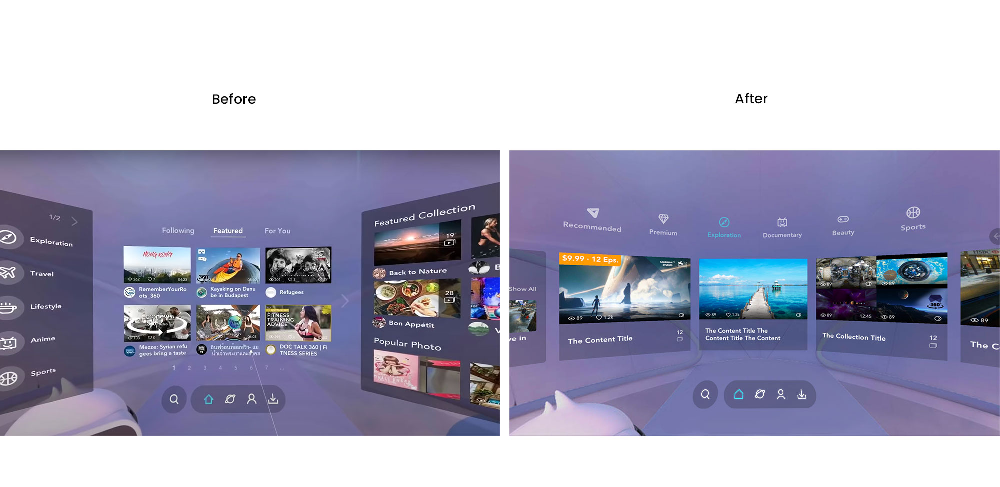Environment
The previous veer land (the purple background on the back of the UI) was not VR friendly, many users feel it's too bright that causes eye strain. Another problem is the old veer land was not works well with the UI in terms of visual hierarchy and design aesthetics.
So at the end of feeds redesign, I prototyped a new background scene in Unity:
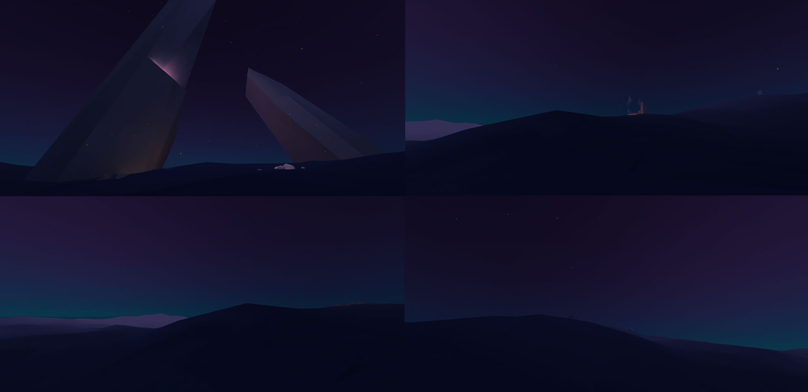Bookmark: Connecting Mobile and VR Experiences
Our user research revealed distinct usage patterns between VR headsets and mobile devices. VR
headsets present several challenges:
- Limited comfort for extended wear
- Potential motion sickness
- Weight considerations, even with standalone headsets
- Limited mobility, primarily used at home
- Restricted usage duration
To address these limitations, we developed a cross-platform Bookmark system. Users can save content through our website or mobile app, which syncs to their VR app under the same account. This allows users to quickly access their saved content when they return to their VR headset.
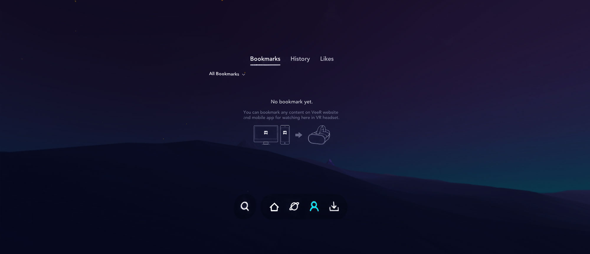Paid Content
In late 2018 we introduced a paid section on our platform. It was our first try for monetization, the model was pay-per-view for cinematic content.

Player: Up Next Optimization
Making decision results in cognitive load. Desirable browsing behavior needs to be primed by default options you set for them. At the end of each watch section, we did some optimization to display some relavent content to our user, based on algorithm.
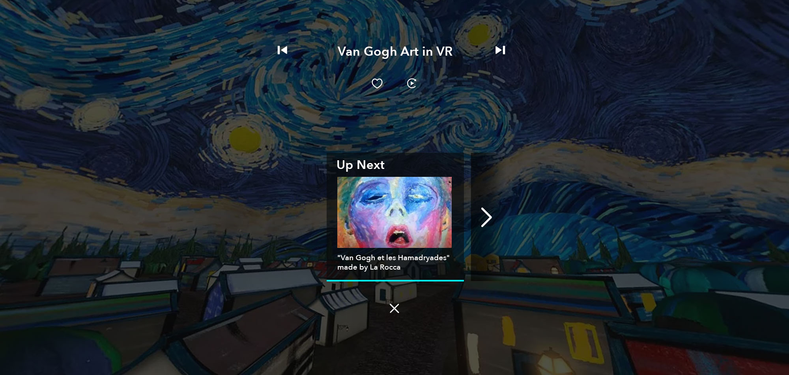VR experience optimization
It's all about User. We did many user experience optimazaiton: add voice input; toggle UI based on controller tracking during video playing; add trailer for paid content; 360 panorama image background preview in content details page; etc.
Research and Collaboration
Our design and research teams maintain continuous dialogue with users through regular testing and validation. We also host the annual VeeR Creator Conference, bringing together outstanding global VR content creators to exchange ideas and production experiences.
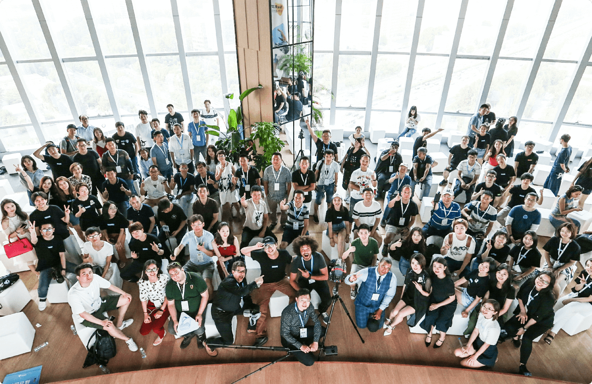